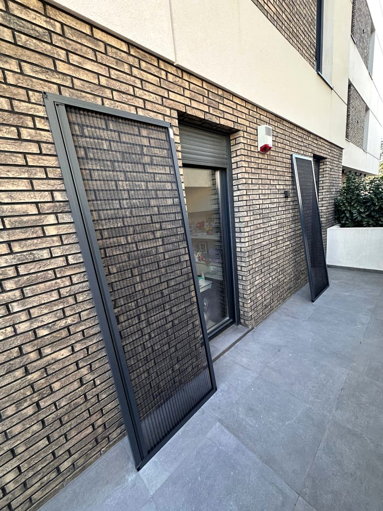
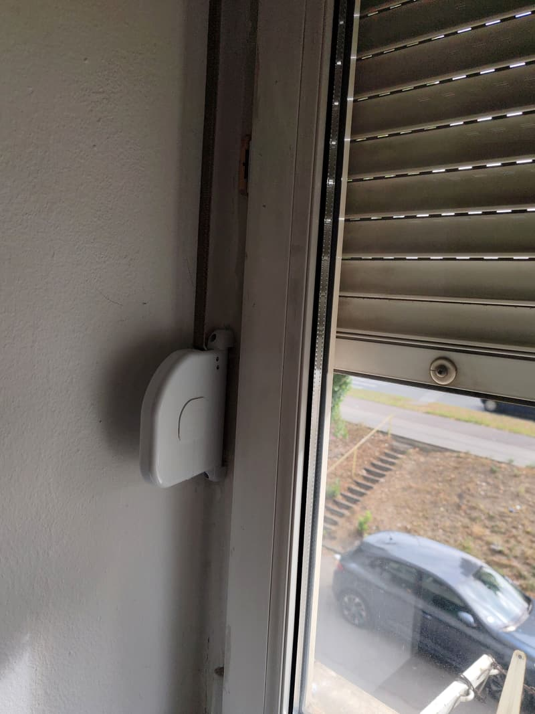
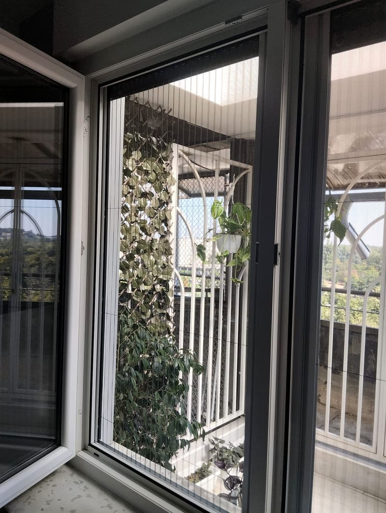

Komarnici po meri
Od kvalitetnih aluminijumskih profila, sa mrežicom koju izaberete. Rolo, plise i fiksni, za prozore i za vrata.
Svi tipovi komarnikaIzrada, ugradnja i popravka u Beogradu. Dođemo na merenje, a boju uskladimo sa vašom stolarijom.
5,0 121 recenzija na Google-u
„Izuzetno stručan i profesionalan gospodin Ivan. Svaki problem zna da praktično reši. Za svaku preporuku.“
Komarnike i roletne pravimo po meri i ugrađujemo. Pored toga servisiramo i štelujemo stolariju bilo koje vrste.

Od kvalitetnih aluminijumskih profila, sa mrežicom koju izaberete. Rolo, plise i fiksni, za prozore i za vrata.
Svi tipovi komarnika
Lamele punjene poliuretanskom penom bolje čuvaju toplotu i tiše rade. Na gurtnu, kanap ili elektro motor.
O roletnamaPala roletna, pocepana gurtna, prozor koji ne dihtuje. Popravljamo komarnike, roletne, prozore i vrata.
Šta sve popravljamo
Rolo komarnici su najtraženiji, ali nisu jedini. Na merenju zajedno biramo onaj koji odgovara vašem prozoru.
Mrežica se namotava u kutiju iznad prozora. Kad vam treba, spustite je, a kad komarnik ne koristite, podignete je i ona se urola u kutiju. Tako ne smeta i duže traje.
Dobar izbor za većinu prozora. Jednostavan je za ugradnju i održavanje, zato ga mušterije najčešće i biraju.
Radi kao rolo klasik: mrežica se spušta iz kutije i vraća se u nju. Razlika je u donjoj, završnoj lajsni, koja daje uredniji završetak uz donji deo prozora.
Dobar izbor kada želite rolo komarnik sa čistijim završetkom. Na merenju ćemo videti da li je to pravo rešenje za vaš prozor.
Mrežica je složena kao harmonika i otvara se bočno, kao klizna vrata. Kad je skupljena, zauzima malo mesta uz ivicu okvira, a prolaz ostaje slobodan.
Dobar izbor za balkonska i terasna vrata i za šire otvore kroz koje se često prolazi.
Aluminijumski ram sa mrežicom stalno stoji sa spoljne strane prozora. Nema mehanizma, pa nema ni šta da se pokvari, a prozor otvarate kao i do sada.
Dobar izbor za prozore koje leti držite otvorene i kod kojih mrežicu ne morate da sklanjate.
Isti ram sa mrežicom, ali postavljen sa unutrašnje strane. Postavlja se i skida iznutra, bez izlaska napolje.
Dobar izbor kada spolja nema pristupa, na primer na višim spratovima, ili kada fasada ne dozvoljava spoljnu ugradnju.

Profil komarnika radimo u tri boje, pa ga uklopimo sa prozorima, bilo da su beli, tamno sivi ili braon. Izaberite boju i pogledajte kako okvir izgleda.
Bela je osnovna. Antracit i braon se doplaćuju 2 € po m².
Na 060 193 0660, ili sliku prozora na Viber i WhatsApp. Tako odmah vidimo o čemu se radi.
Izmeri prozore i vrata na vašoj adresi, a vi zajedno dogovorite tip komarnika i boju.
Komarnik pravimo po meri i ugrađujemo ga bez nereda. Na ulazu u stan Ivan stavlja navlake za cipele.

Fotografije sa naših ugradnji po Beogradu.
„Majstor je ugradio komarnike u našem stanu po meri i uskladio boju sa prozorima po odličnoj ceni. […] Brza i kvalitetna usluga. Veoma ljubazan, fin, prijatan čovek.“
„Brzo je došao, popravio sve što je trebalo popraviti, držao se svoje cene, čak je stavio higijenske navlake za cipele kada je ušao u stan. Svaka pohvala!“
„Brza i efikasna montaža, Ivan je sve završio pre nego što sam mu čak i ponudila kafu, a ne i napravila.“
„Imali smo popravku pale roletne i zamenu kaiševa. Sada je sve tip top. Preporuka!“
Komarnik se pravi po meri, pa i cena zavisi od mera i boje. Ovako se računa, bez iznenađenja na kraju.
Ako ovde nema odgovora na vaše pitanje, pozovite 060 193 0660.
Da. Dolazimo na vašu adresu u Beogradu, izmerimo prozore i vrata i zajedno izaberemo tip i boju.
Belu, antracit i braon. Bela je osnovna, a za komarnike u antracit ili braon boji doplata je 2 € po m².
Da. Radimo servis roletni i komarnika i štelovanje stolarije bilo koje vrste, bez obzira na to ko ih je ugradio. Više na stranici servis i popravke.
Cena se računa po m² i zavisi od tipa komarnika i boje. Pošaljite mere i dobićete ponudu.
Najbrže je da pozovete ili pošaljete sliku. Ako vam je lakše, popunite formu i poruka će biti spremna za slanje.
Pozovite ili pošaljite poruku, javljamo se brzo.